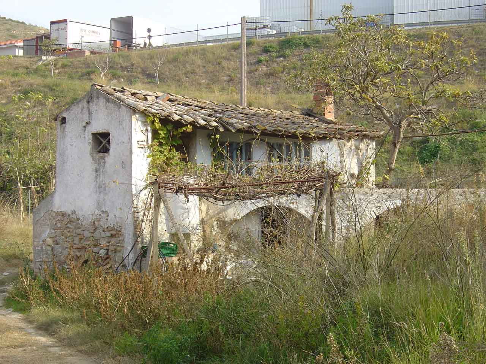
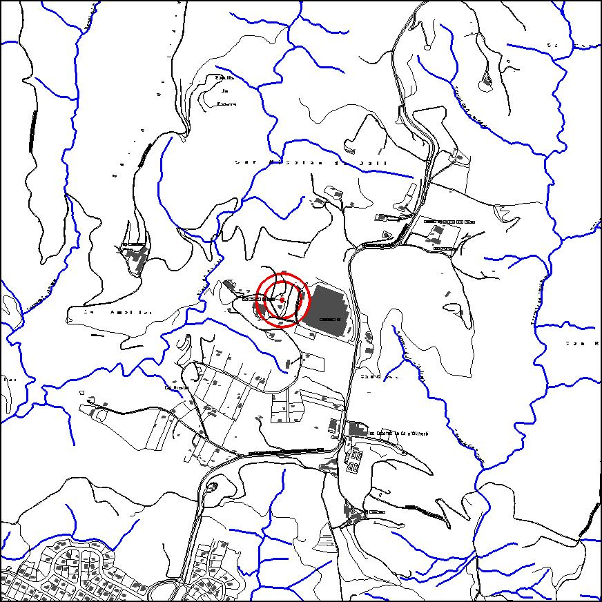

|  |
 |
Nom de l’element: Molí d’aigua
Clau d’identificació: B.05
Nucli o indret: Can Nicolau de Dalt.
UTM: X= 413.691, Y= 4.595.357.
Règim del sòl: sòl urbanitzable delimitat.
1.1. Època de construcció i tipologia:
Molí d’aigua, l’època del qual es desconeix. Està formada per una edificació de planta rectangular, amb dos nivells o plantes. La coberta és de teula a dues aigües compta amb diverses finestres. D’altra banda, hi ha un viaducte per on discorre l’aigua i que entra a l’interior de l’edificació (molí), fet de pedra.
1.2. Estat de conservació:
Regular.
1.3. Ús actual:
Sense ús.
1.4. Accés:
Accés fàcil des del barri de Can Nicolau de Dalt.
Podria tractar-se de l’únic molí d’aigua supervivent al terme municipal.
3.1. Usos admesos:
Ús recreatiu cultural i social, serveis tècnics.
3.2. Condicions d’ordenació:
Segons Pla Parcial a redactar.
3.3. Accés i serveis:
Des del barri de Can Nicolau de Dalt.
BPU (Bé Protegit Urbanísticament)